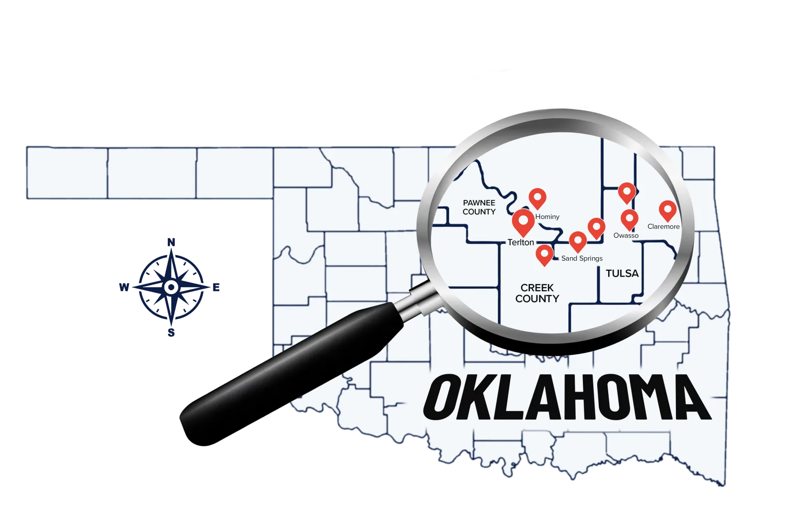

New Gravel Driveways
- Built from a solid, compacted base up
- Graded to shed water, not hold it
- Sized for the traffic it has to carry
CG Dirt Work and More builds and rebuilds gravel driveways across Skiatook, Owasso, Collinsville, and the rural roads of Osage, Tulsa, and Rogers County. A gravel drive is only as good as the base under it and the way it sheds water. Skip either one and you are filling ruts and potholes every season. We build them to last.
From a short residential drive to a long rural approach, the work that makes it last is the same. Here is the gravel driveway work we handle across northeast Oklahoma.
Anybody can dump gravel on the ground. The trouble is, loose gravel on soft or uneven ground turns to ruts and potholes the first wet season. A drive that lasts comes down to the base under it and where the water goes. We studied how water and soil behave on a property, and that goes into the drive before the first load of gravel shows up.
Most of the work on a good driveway happens before the surface gravel goes down. Here is what goes into one built to hold.
Clearing, leveling, and compacting the ground so the drive has a solid base under it from the start.
Shaping the surface and the slope so water sheds off the drive instead of sitting on it.
Setting culverts where water crosses so runoff moves under the drive instead of through it.
Laying and grading the right gravel over a prepared base so the surface holds up and stays even.
A driveway built cheap costs you every season in repairs and headaches. A driveway built right you barely think about.
We work on driveways and rural approaches throughout Osage, Tulsa, and Rogers County and the communities around Skiatook.

Straight answers to the questions we hear most from property owners building a new drive or tired of fixing an old one.
The cost of a gravel driveway depends on its length and width, how much base and grading work the ground needs, the gravel you choose, and whether the drive needs culverts for drainage. A short, flat residential drive is a very different job from a long rural approach across uneven acreage. What costs the most in the long run is a drive built without a proper base or drainage, since that one washes out and has to be redone. We build gravel driveways across Skiatook and northeast Oklahoma and give you a clear estimate after we look at the site.
A drive that washes out almost always has a water problem, a base problem, or both. If the surface was not crowned and graded to shed water, runoff sits on it and carries the gravel away. If there was no solid base underneath, the gravel works down into soft ground and ruts. And if water crosses the drive with no culvert, it cuts a channel straight through. We fix the cause, not just the symptom, so the rebuild actually holds across Osage, Tulsa, and Rogers County.
Built right, a gravel driveway can hold up for years with only occasional regrading and a fresh top layer now and then. Built on a poor base or without proper drainage, it can start rutting and washing within a single wet season. The difference is almost entirely in the prep work underneath, which is why we put the work into the base and the drainage before the surface gravel ever goes down.
If water crosses or runs alongside your driveway, you almost certainly do. A culvert lets that runoff pass under the drive instead of cutting across the surface and washing it out. Where the drive meets a ditch or a low spot is usually where one belongs. We assess the water flow on your property and set culverts where they keep the drive from washing out.
We are based near Skiatook and build and repair gravel driveways throughout Osage, Tulsa, and Rogers County, including Owasso, Collinsville, Sperry, Claremore, and the rural acreage around them. If your property is within about 45 minutes of Skiatook and needs a new drive or a fix for one that keeps washing out, give us a call.
Tell us what you are working with, a new driveway or one that keeps rutting out, and you will get a straight answer about what it takes to do it right.